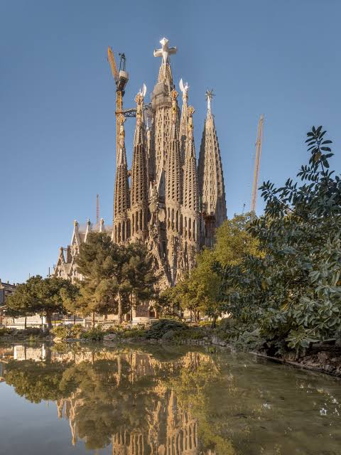

La Sagrada Familia es una famosa basílica ubicada en Barcelona, España. Es uno de los monumentos más emblemáticos de la ciudad y una obra maestra del arquitecto Antoni Gaudí.
La construcción de la Sagrada Familia comenzó en 1882 y aún continúa en la actualidad. Su diseño combina elementos del modernismo catalán con influencias góticas y orgánicas, lo que le confiere un estilo único y distintivo.
La basílica cuenta con impresionantes fachadas, torres y detalles arquitectónicos que representan escenas bíblicas. Su interior es igualmente impresionante, con columnas que se asemejan a árboles y vitrales que llenan el espacio de luz y color.
La Sagrada Familia ha sido declarada Patrimonio de la Humanidad por la UNESCO y atrae a millones de visitantes cada año. Su importancia cultural, artística y religiosa la convierte en un símbolo icónico de Barcelona y de España.
Si deseas obtener más información sobre La Sagrada Familia, puedes visitar el sitio web oficial: Sagrada Familia - Sitio Oficial.
